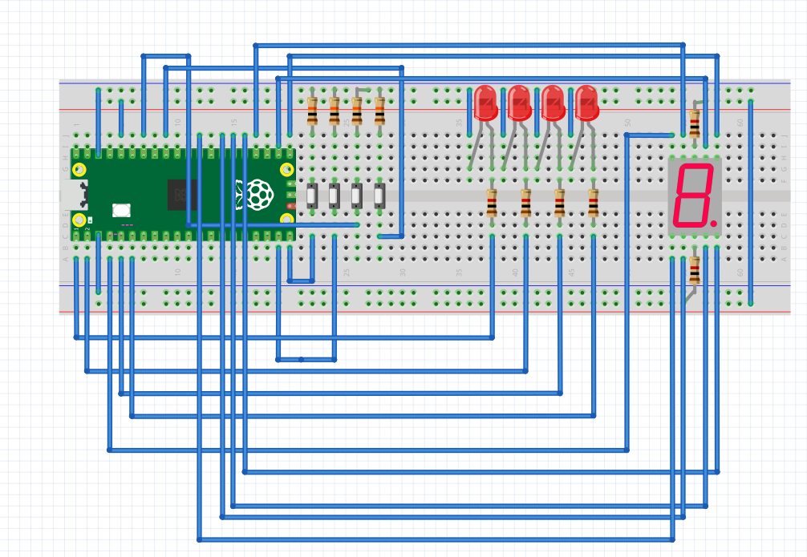

Examenes Del Curso
Primer Parcial: Simón Dice
En este parcial, nuestro reto consistió en hacer utilizando todos los conocimientos previos un juego de simón dice en raspberry Pi Pico 2, con las siguientes normas:
1.- La secuencia crece +1 por ronda, de 1 hasta 15.
2.- La persona jugadora debe repetir la secuencia con 4 botones dentro de un tiempo límite por ronda (En nuestro caso se anuló esta regla porque Sebastián quedó en podio del Kahoot).
3.- Tiempo límite por ronda (fase de entrada): TL = longitud + 5 segundos (p. ej., Ronda 7 → 12 s). (No lo aplicamos).
4.- Puntaje (0–15): mostrar la máxima ronda alcanzada en un display de 7 segmentos en hex (0–9, A, b, C, d, E, F).
5.- Aleatoriedad obligatoria: la secuencia debe ser impredecible en cada ejecución.
Reglas del juego (obligatorias):
1.- Encendido/Reset: el 7 segmentos muestra “0” y queda en espera de Start (cualquier botón permite iniciar).
2.- Reproducción: mostrar la secuencia actual (LEDs uno por uno con separación clara).
3.- Entrada: al terminar la reproducción, la persona debe repetir la secuencia completa dentro de TL.
4.- Fallo (Game Over): botón incorrecto, falta/extra de entradas o exceder TL.
5.- Progresión: si acierta, puntaje = número de ronda, agrega 1 color aleatorio y avanza.
6.- Fin: al fallar o completar la Ronda 15. Mostrar puntaje final en 7 segmentos (hex).
Programa
#include "pico/stdlib.h"
#include "hardware/adc.h"
#include <stdlib.h>
#include <time.h>
#define Rondas 15
#define Parpadeo 400
#define Pausa 250
#define Debounce 50
#define LED0 0
#define LED1 1
#define LED2 3
#define LED3 4
#define BTN0 27
#define BTN1 28
#define BTN2 14
#define BTN3 15
#define SegmentoA 16
#define SegmentoB 17
#define SegmentoC 18
#define SegmentoD 26
#define SegmentoDp 20
#define SegmentoE 21
#define SegmentoF 22
#define SegmentoG 2
// arrays de pines para recorrer
const uint LEDS[4] = {LED0, LED1, LED2, LED3};
const uint Botones[4] = {BTN0, BTN1, BTN2, BTN3};
const uint Segmentos[8] = {SegmentoA, SegmentoB, SegmentoC, SegmentoDp, SegmentoE, SegmentoF, SegmentoG, SegmentoD};
//Ánodo común, 0=1, 1=0
const bool MapaDisplay[16][8] = {
{0,0,0,0,0,0,1,1}, // 0
{1,0,0,1,1,1,1,1}, // 1
{0,0,1,0,0,1,0,1}, // 2
{0,0,0,0,1,1,0,1}, // 3
{1,0,0,1,1,0,0,1}, // 4
{0,1,0,0,1,0,0,1}, // 5
{0,1,0,0,0,0,0,1}, // 6
{0,0,0,1,1,1,1,1}, // 7
{0,0,0,0,0,0,0,1}, // 8
{0,0,0,0,1,0,0,1}, // 9
{0,0,0,1,0,0,0,1}, // A
{1,1,0,0,0,0,0,1}, // b
{0,1,1,0,0,0,1,1}, // C
{1,0,0,0,0,1,0,1}, // d
{0,1,1,0,0,0,0,1}, // E
{0,1,1,1,0,0,0,1} // F
};
uint8_t Sequencia[Rondas];
int Num_sequencia = 0;
void MuestraDisplay(uint8_t n) {
for (int i = 0; i < 8; i++) {
gpio_put(Segmentos[i], MapaDisplay[n & 0xF][i]);
}
}
void Blink(uint8_t iL, uint32_t ms) {
gpio_put(LEDS[iL], 1);
sleep_ms(ms);
gpio_put(LEDS[iL], 0);
}
int PresionaBoton() {
while (1) {
for (int i = 0; i < 4; i++) {
if (!gpio_get(Botones[i])) {
sleep_ms(Debounce);
while (!gpio_get(Botones[i]));
return i;
}
}
sleep_ms(10);
}
}
void EsperarBoton() {
while (1) {
for (int i = 0; i < 4; i++) {
if (!gpio_get(Botones[i])) {
sleep_ms(Debounce);
while (!gpio_get(Botones[i])); // espera a quitar el botón presionado
return;
}
}
sleep_ms(10);
}
}
void IniciarLeds() {
for (int i = 0; i < 4; i++) {
gpio_init(LEDS[i]);
gpio_set_dir(LEDS[i], true);
}
}
void IniciarBotones() {
for (int i = 0; i < 4; i++) {
gpio_init(Botones[i]);
gpio_set_dir(Botones[i], false);
gpio_pull_up(Botones[i]);
}
}
void IniciarDisplay() {
for (int i = 0; i < 8; i++) {
gpio_init(Segmentos[i]);
gpio_set_dir(Segmentos[i], true);
}
}
// Reproduce la secuencia actual
void ReproducirSecuencia(int lim) {
sleep_ms(300);
for (int i = 0; i < lim; i++) {
Blink(Sequencia[i], Parpadeo);
sleep_ms(Pausa);
}
}
// Game Over
void GameOver(uint8_t score) {
MuestraDisplay(score > 15 ? 15 : score);
for (int j = 0; j < 6; j++) {
for (int i = 0; i < 4; i++) gpio_put(LEDS[i], 1);
sleep_ms(120);
for (int i = 0; i < 4; i++) gpio_put(LEDS[i], 0);
sleep_ms(120);
}
EsperarBoton();
Num_sequencia = 0;
MuestraDisplay(0);
}
// Genera un nuevo color aleatorio y lo agrega a la secuencia
void SiguienteRonda() {
Sequencia[Num_sequencia++] = rand() & 0x3;
if (Num_sequencia > Rondas) Num_sequencia = Rondas;
}
bool PresionarSecuencia() { //La función que tiene que hacer el jugador físicamente
for (int i = 0; i < Num_sequencia; i++) {
int presionar = PresionaBoton();
Blink(presionar, 120);
if (presionar != Sequencia[i]) return false;
}
return true;
}
int main() {
stdio_init_all();
IniciarLeds();
IniciarBotones();
IniciarDisplay();
// Aleatoriedad: ADC + tiempo
adc_init();
adc_gpio_init(26);
adc_select_input(0);
uint16_t noise = adc_read();
srand(to_us_since_boot(get_absolute_time()) ^ noise);
MuestraDisplay(0);
while (1) {
EsperarBoton();
while (1) {
SiguienteRonda();
MuestraDisplay(Num_sequencia);
sleep_ms(400);
ReproducirSecuencia(Num_sequencia);
bool Correcto = PresionarSecuencia();
if (!Correcto) {
GameOver(Num_sequencia - 1);
break; // reinicia juego
}
if (Num_sequencia >= Rondas) {
GameOver(Rondas);
break; // reinicia juego
}
}
}
}
Diagrama y video

Segundo Parcial: Control de Servomotor
En este parcial, nuestro reto consistió en utilizar la conexión con el puerto serial de una raspberry pi pico 2 y hacer un programa en C++ de multifase para mover un sevomotor, con configuraciones que tú puedes establecer, borrar, reproducir indefinidamente o moverlo paso a paso con botones, las reglas son las siguientes:
Reglas del servo(obligatorias):
Hardware mínimo
1 × servomotor en un pin PWM (50 Hz).
3 × botones:
BTN_MODE: cambia el modo activo (cíclico: Entrenamiento → Continuo → Step → …).
BTN_NEXT: avanza a la siguiente posición (sólo en Step).
BTN_PREV: retrocede a la posición anterior (sólo en Step).
Pi pico 2
Modos de operación 1) Modo Entrenamiento Se recibe texto por USB-serial con los comandos siguientes (se aceptan minúsculas/mayúsculas indistintamente y también sus alias en inglés):
Borrar (alias: clear, borrar)
Sintaxis: Borrar
Efecto: elimina la lista completa de posiciones.
Respuesta: OK.
Escribir (alias: write, escribir)
Sintaxis: Escribir, v1, v2, ..., vn
vi son enteros en 0–180.
Efecto: sobrescribe la lista con los valores dados en ese orden.
Respuesta: OK si todos son válidos y la lisa de posiciones; si alguno está fuera de rango o la lista queda vacía → Error argumento invalido.
Reemplazar (alias: replace, reemplazar)
Sintaxis: Reemplazar, i, v
Índice i en base 1 (1 = primera posición).
v en 0–180.
Efecto: reemplaza el elemento i por v.
Respuesta: OK. Si i no existe → Error indice invalido. Si v fuera de rango → Error argumento invalido.
2) Modo Continuo Recorre todas las posiciones de la lista en orden, moviendo el servo e imprimiendo cada 1.5 s:
Formato: posX: V (por ejemplo, pos1: 90), donde X es base 1.
Si la lista está vacía: imprimir cada 1.5 s Error no hay pos y no mover el servo.
Al cambiar a otro modo, el ciclo se detiene inmediatamente.
3) Modo Step BTN_NEXT: avanza una posición (si ya está en la última, se mantiene en esa última).
BTN_PREV: retrocede una posición (si ya está en la primera, se mantiene en la primera).
En cada cambio de posición:
mover el servo a la posición seleccionada;
imprimir posX: V.
Si la lista está vacía: al presionar BTN_NEXT o BTN_PREV, imprimir Error no hay pos y no mover el servo.
INFO IMPORTANTE: El movimiento de un servo requiere alimentacion 5-6v y en el pin de signal, un pwm a 50 HZ con un pulso de 1-2ms que representa 0-180 grados
Programa
#include <stdio.h>
#include <string>
#include <cctype>
#include "pico/stdlib.h"
#include "hardware/pwm.h"
#include "hardware/gpio.h"
using namespace std;
#define SERVO_PIN 2
#define BTN_ATRAS 14
#define BTN_ADELANTE 13
#define BTN_MODE 16
#define UARTID uart0
#define BAUDIOS 115200
#define TX 0
#define RX 1
#define MAX_POS 10
#define TOP 20000
int posiciones[MAX_POS] = {0};
int num_pos = 0;
int modo = 1, idx = 0;
volatile bool cambio_modo = false;
// FUNCIONES
inline int angle_to_pulse(int a){return 450+(a*1200)/180;}
inline void set_servo(uint s,uint c,int a){pwm_set_chan_level(s,c,angle_to_pulse(a));}
inline void borrar_lista(){
for(int i=0;i<MAX_POS;i++)
posiciones[i]=0;
num_pos=0;
}
inline bool lista_vacia(){
if(num_pos==0) return true;
for(int i=0;i<num_pos;i++) if(posiciones[i]!=0) return false;
return true;
}
inline void imprimir_lista(){
printf("Lista actual: ");
for(int i=0;i<MAX_POS;i++){
printf("%d",posiciones[i]); if(i<MAX_POS-1)printf(", ");
}
printf("\n");
}
void str_tolower(string &s){for(auto &c:s)c=tolower(c);}
//ISR
void cambio_isr(uint gpio,uint32_t events){cambio_modo=true;}
int main(){
stdio_init_all();
sleep_ms(1500);
uart_init(UARTID,BAUDIOS);
gpio_set_function(TX,GPIO_FUNC_UART);
gpio_set_function(RX,GPIO_FUNC_UART);
uart_set_format(UARTID,8,1,UART_PARITY_NONE);
// SERVO
gpio_set_function(SERVO_PIN,GPIO_FUNC_PWM);
uint slice=pwm_gpio_to_slice_num(SERVO_PIN);
uint chan=pwm_gpio_to_channel(SERVO_PIN);
pwm_set_clkdiv(slice,150.0f);
pwm_set_wrap(slice,TOP);
pwm_set_enabled(slice,true);
gpio_init(BTN_ATRAS
); gpio_set_dir(BTN_ATRAS
,false); gpio_pull_up(BTN_ATRAS
);
gpio_init(BTN_ADELANTE); gpio_set_dir(BTN_ADELANTE,false); gpio_pull_up(BTN_ADELANTE);
gpio_init(BTN_MODE); gpio_set_dir(BTN_MODE,false); gpio_pull_up(BTN_MODE);
gpio_set_irq_enabled_with_callback(BTN_MODE,GPIO_IRQ_EDGE_FALL,true,&cambio_isr);
printf("\n=== MODO 1: ENTRENAMIENTO ===\nComandos: escribir / borrar\n");
string input;
bool prev_fwd=1,prev_back=1;
while(true){
//CAMBIO DE MODO
if(cambio_modo){
cambio_modo=false;
modo=(modo%3)+1;
idx=0;
printf("\n=== CAMBIO A MODO %d ===\n",modo);
if(!lista_vacia()){
set_servo(slice,chan,posiciones[0]);
sleep_ms(500);
}
if(modo==1) printf("Modo entrenamiento: escribir / borrar\n");
if(modo==2) printf("Modo repetición automática.\n");
if(modo==3) printf("Modo paso a paso con botones.\n");
}
//MODO 1
if(modo==1){
int ch=getchar_timeout_us(0);
if(ch!=PICO_ERROR_TIMEOUT){
if(ch=='\r'||ch=='\n'){
if(!input.empty()){
string cmd=input; str_tolower(cmd);
if(cmd=="borrar"||cmd=="clear"){borrar_lista();printf("OK.\n");imprimir_lista();}
else if(cmd.find("escribir")==0||cmd.find("write")==0){
printf("¿Cuántos valores (1–10)?: ");
fflush(stdout);
string n_str;
while(true){
int c=getchar_timeout_us(0);
if(c!=PICO_ERROR_TIMEOUT){
if(c=='\r'||c=='\n')break; n_str+=(char)c;
}
}
int n=stoi(n_str);
if(n<1||n>MAX_POS){
printf("Fuera de rango.\n");input.clear();continue;
}
printf("Ingrese %d valores (0–180) separados por espacios:\n",n);
fflush(stdout);
string val_str;
while(true){
int c=getchar_timeout_us(0);
if(c!=PICO_ERROR_TIMEOUT){
if(c=='\r'||c=='\n')break; val_str+=(char)c;
}
}
borrar_lista();
int i=0; size_t pos=0;
while(i<n && pos<val_str.size()){
size_t e=val_str.find(' ',pos);
int v=stoi(val_str.substr(pos,e-pos));
if(v<0||v>180){printf("Valor fuera de rango.\n");break;}
posiciones[i++]=v;
if(e==string::npos)break; pos=e+1;
}
num_pos=i;
printf("OK.\n");imprimir_lista();
}
else printf("Comando no reconocido.\n");
input.clear();
}
} else input+=(char)ch;
}
}
//MODO 2
else if(modo==2){
if(lista_vacia()){
printf("SIN MOVIMIENTO, LISTA EN 0\n");sleep_ms(1000);
}
else{
for(int i=0;i<num_pos;i++){
if(cambio_modo)break;
set_servo(slice,chan,posiciones[i]);
sleep_ms(1000);
}
}
}
//MODO 3
else if(modo==3){
if(lista_vacia()){
printf("SIN MOVIMIENTO, LISTA EN 0\n");sleep_ms(1000);
}
else{
set_servo(slice,chan,posiciones[idx]);
bool fwd=gpio_get(BTN_ADELANTE);
bool back=gpio_get(BTN_ATRAS
);
if(!fwd && prev_fwd){
if(idx<num_pos-1 && posiciones[idx+1]!=0){
idx++;set_servo(slice,chan,posiciones[idx]);
printf("Avance a paso %d (%d°)\n",idx+1,posiciones[idx]);
} else printf("Fin de secuencia.\n");
}
if(!back && prev_back){
if(idx>0){
idx--;set_servo(slice,chan,posiciones[idx]);
printf("Retroceso a paso %d (%d°)\n",idx+1,posiciones[idx]);
} else printf("Inicio de secuencia.\n");
}
prev_fwd=fwd;
prev_back=back;
sleep_ms(100);
}
}
sleep_ms(10);
}
}